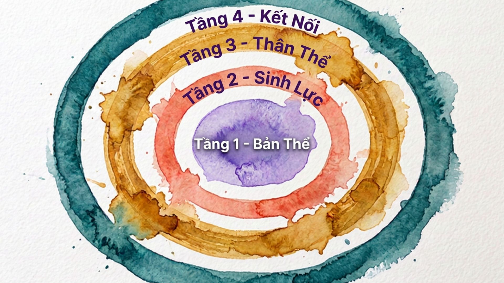

Hành trình phục hồi
Đồng bộ lại nhịp điệu
bên trong và bên ngoài
InSync chào đón bạn đến với không gian phục hồi dành cho giới nữ, đặc biệt cho những người phụ nữ vừa bước vào giai đoạn làm mẹ. Chúng tôi đồng hành cùng bạn tìm lại sự rõ ràng trong giai đoạn mơ hồ của thực tại mới, đồng bộ lại nhịp điệu của tâm trí bên trong và cuộc sống bên ngoài — một cách trọn vẹn là chính mình để vững chắc từ bên trong rồi tự do cất cánh.
Mô hình Sóng Nội Sinh


Từ áo giáp vai trò — đến bản thể nguyên bản
Từ sống trong chiếc áo giáp của những vai trò → Đến nghe thấy bản thể nguyên bản của mình
Bạn không còn chỉ nhìn thấy mình qua những gì mình đang đảm nhận. Khi tạm cởi bỏ lớp áo giáp của mọi vai trò và trách nhiệm, bạn bắt đầu chạm được điều bản thể mình thực sự đang khao khát — và nhận ra rằng cảm giác xứng đáng cùng quyền tự chủ vốn chưa bao giờ mất đi, chỉ đang chờ được nhìn thấy lại.

Từ cạn kiệt mơ hồ — đến làm chủ dòng năng lượng
Từ không biết mình đang cạn kiệt điều gì → Đến làm chủ dòng chảy năng lượng của chính mình
Bạn không còn mơ hồ với cảm giác mệt mà không biết tại sao. Bạn nhìn thấy rõ đâu là những gì đang thực sự nuôi dưỡng mình, đâu là những gì đang âm thầm làm cạn kiệt năng lượng từng ngày. Hệ thần kinh được điều hòa lại — bạn hành động từ trạng thái ổn định bên trong thay vì từ vòng lặp căng thẳng và kiệt sức tích lũy.

Từ bỏ qua — đến lắng nghe nhịp sinh học
Từ bỏ qua những gì cơ thể đang nói → Đến lắng nghe và thuận theo nhịp sinh học của mình
Bạn thôi đối xử với cơ thể như thứ cần ép buộc vận hành. Bạn bắt đầu trân trọng thông điệp mà cơ thể đang gửi đi — qua giấc ngủ, qua nội tiết tố đang thay đổi, qua những cơn đau âm thầm — và nhận ra đó không phải là điểm yếu, mà là ngôn ngữ trung thực nhất của quá trình phục hồi đang diễn ra từ bên trong.

Từ hy sinh bản thân — đến ranh giới từ tình yêu
Từ yêu thương bằng cách hy sinh bản thân → Đến thiết lập ranh giới từ tình yêu dành cho bản thân và thế giới xung quanh
Đây là nơi sự chuyển hóa bên trong trở nên nhìn thấy được với thế giới xung quanh. Bạn không còn phải chọn giữa việc giữ gìn bản thân và hiện diện cho những người mình yêu thương. Ranh giới được thiết lập không phải từ sự kiệt sức, mà từ sự rõ ràng — để các vai trò được tái định hình và các mối quan hệ được xây dựng lại trên nền lành mạnh hơn, bền vững hơn.